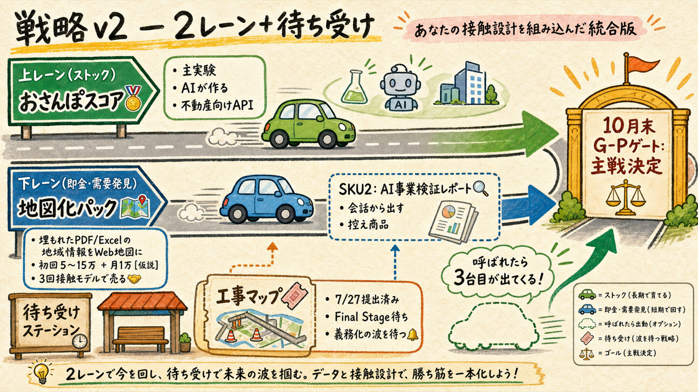
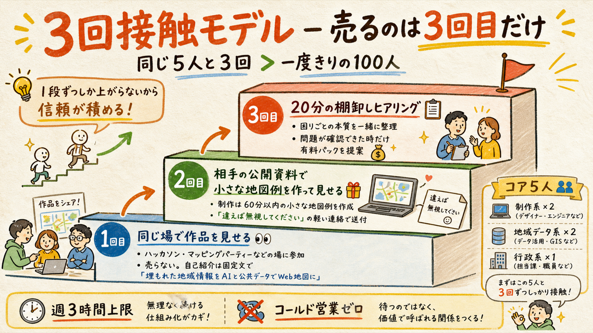
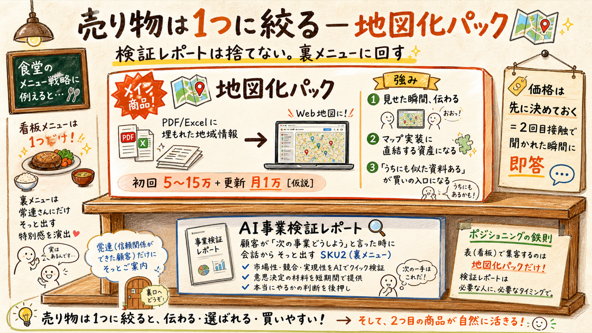
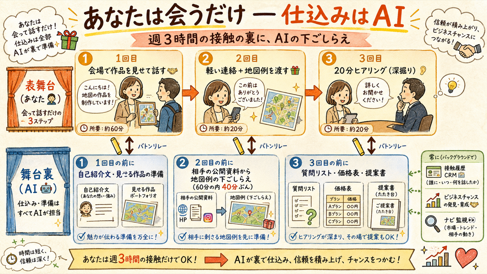

持ち込まれた「同じ5人と自然に3回会う」設計を評価した。結論: 採用。前回資料には「AI事業検証サービスも結局は客が要る」という未解決の穴があったが、この案は対人を「コールド営業」から「共同作業の場での作品見せ＋相手の募集への反応」に再発明しており、穴を塞いでいる。ただし統合前に修正が2つ — 商品の一本化と、順番・AI分担の調整。
2レーン＋裏メニュー＋待ち受け。10月末のゲートは不変

| 枠 | 中身 | 変更点 |
|---|---|---|
| ストックレーン（主実験） | おさんぽスコア — 不動産向け歩行安全スコアAPI | 変更なし。8月試作→9月デモ公開→メール提案 |
| 即金・需要発見レーン | 地図化パック — 埋もれたPDF/Excelの地域情報をWeb地図に。3回接触モデルで販売 | 新設。「AI検証サービスのコールド出品」と「現場HPの電話営業」の両方を置き換える上位互換 |
| 裏メニュー（SKU2） | AI事業検証レポート（1〜3日・一次情報つき） | 出品はしない。地図化の顧客が「次の事業をどうしよう」と言った時に会話から出す |
| 待ち受け（オプション） | 工事マップ — 7/27提出＋Final Stage・義務化の波の監視 | 変更なし |
お世辞ではなく、前回資料の穴を具体的に塞いでいる

前回の「セミナー申込取り消し」との整合: 矛盾しない。取り消したのは「売るための義務的対人」（名刺配り・営業電話）。今回入れるのは「作るための共同作業接触」。同じ「人に会う」でも、あなたにとっての消耗度がまったく違う — 立食交流会ではなく作業のある場を選ぶ、という本人案の指定がまさにその区別。
あなたの自己紹介文は、実はもう商品定義になっている

「PDFやExcelに埋もれた地域情報を、AIと公共データで使えるWeb地図に変えています」— この一文は自己紹介であると同時に商品定義で、前回の「AI事業検証サービス」とは別物。比べると地図化の方が強い: ①マップ×オープンデータの実装資産に直結する ②見せた瞬間に伝わる（検証レポートは読ませる必要がある）③「うちにも似た資料がある」という反応がそのまま買いの入口になる。検証レポートは捨てない — 地図化の顧客との3回目以降の会話で「次の事業どうしよう」が出た時の裏メニュー（SKU2）に回す。
先に決めておくこと（2回目接触で聞かれた瞬間に即答するため）: 地図化パック = 初回制作5〜15万円＋更新が要るなら月額1万円 [仮説・最初の1件で調整]。「20分の棚卸しヒアリング」の場で出す1枚ものの料金表はAIが作っておく。
7/27提出がデモ1号を兼ねる。デモ整理は8月へ
| 期間 | あなたの行動（週3h上限） | AIの裏方作業 |
|---|---|---|
| 〜7/27 | 提出3手のみ（＝デモ1号の完成） | 提出の伴走 |
| 8月前半 | ビジネスチャンス・ナビ登録／Code for Japan Slackに参加（コミュニティは1つだけ。OSMマッピングパーティーは四半期1回の現場体験枠） | デモ3点の整理（工事案内・イベント案内・施設情報）／固定自己紹介文の最終化 |
| 8月後半 | ハッカソン交流会・実装支援の場で3人と会話（売らない） | 会った人の接触履歴CRM開始（誰に・何を見せた・次の一手） |
| 9月 | 2回目接触×3件（軽い連絡＋小さな地図例を渡す）／おさんぽスコアのデモ公開ボタン | 相手の公開資料から地図例の下ごしらえ（60分の内40分ぶん）／スコア試作の実装 |
| 10月 | 棚卸しヒアリング3件（20分×3）→ 有料試行1件 | 質問リスト・料金表・提案書／ナビ案件の監視と要約 |
| 10月末 | G-Pゲート判定: 有料試行の有無・スコアの手応え・楽しさで主戦を決める | 判定材料の整理（この資料の形式で提出） |
撤退基準もあなたの案に合わせて更新: 90日で有料試行が0件なら、3回接触モデル自体は維持したまま商品定義だけを作り直す（接触の仕組みと商品の当たり外れは別の変数として扱う）。おさんぽスコアの撤退基準（2027年3月に有償2社未満で凍結）は変更なし。
週3時間の表舞台の裏に、AIの下ごしらえを敷く
